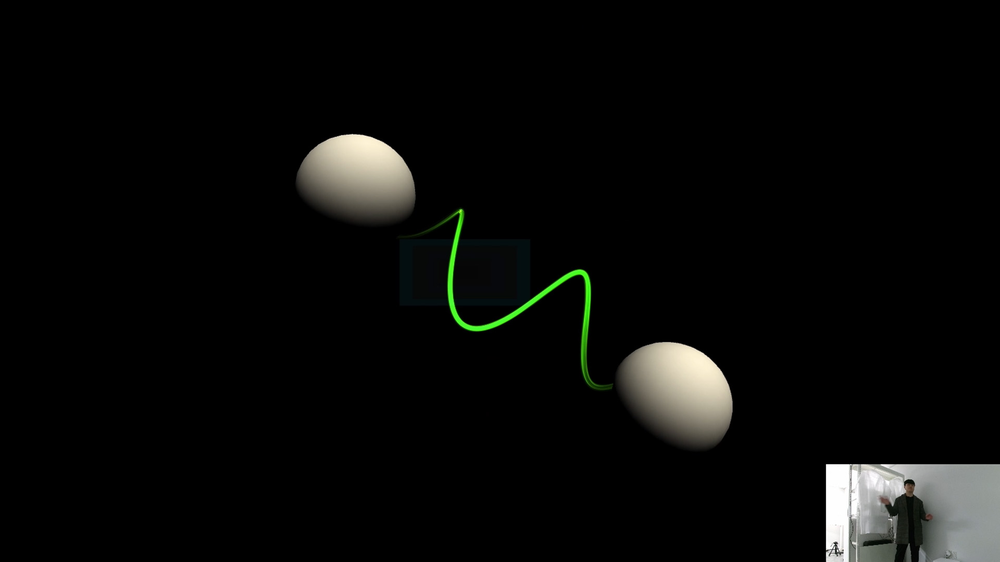
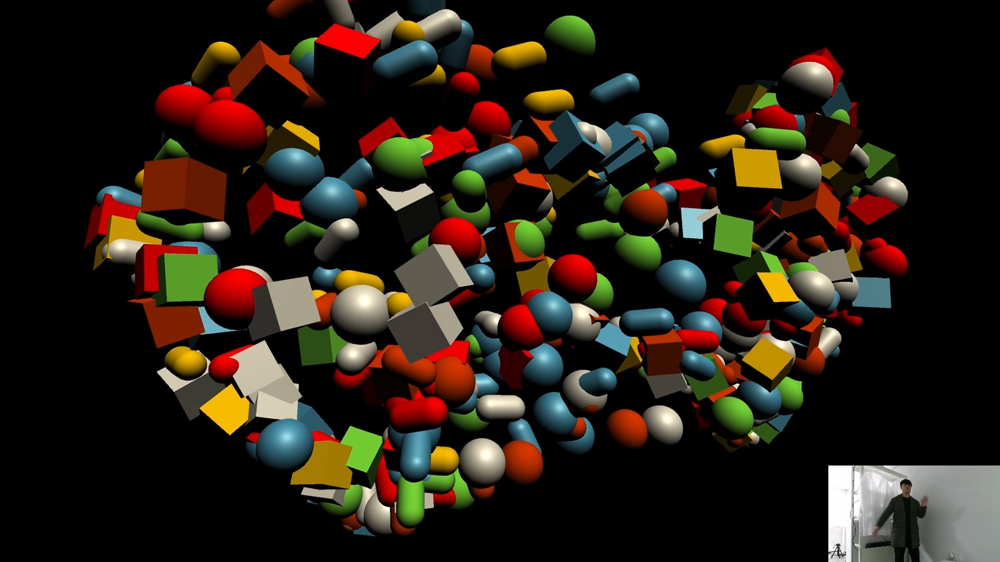
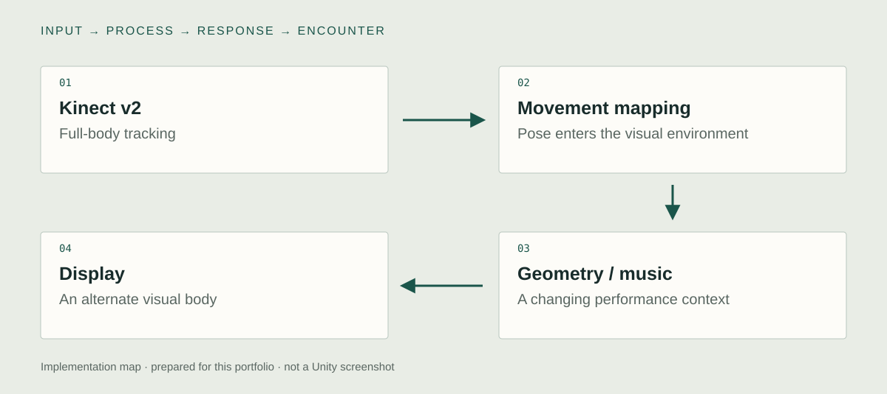

Unity implementation
Kinect v2 input
I used Kinect v2 to bring full-body movement into the Unity work. The body becomes a source of control data for a geometric environment. Tracking is the input stage, while the visual interpretation of the movement belongs to the artwork's own mapping.

Body-to-geometry mapping
I mapped movement into geometric visual environments. The goal was an alternate visual body rather than a realistic avatar. The relation between a movement and a changing form needs to remain discoverable even when the visual world deliberately changes familiar spatial relationships.
Six-track audiovisual scene
The installation connects six music tracks with the visual space in which participants move. I built the body-driven interaction within that audiovisual context. The available documentation establishes the six-track experience, while the exact track-selection and audio-control implementation still needs an Editor capture.

System & design decisions

- 01Kinect v2
Full-body tracking
- 02Movement mapping
Pose enters the visual environment
- 03Geometry / music
A changing performance context
- 04Display
An alternate visual body
Representation rather than imitation
The tracking data does not need to reproduce a realistic character. It can drive geometric forms, making the mapping itself an expressive part of the work.
Keep the movement readable
Changing the visual rules still requires a relationship the participant can discover. The engineering boundary is where body data becomes a visible and usable control.
Concept
What kind of performance emerges when a body no longer appears under familiar visual rules?
Track 6 places the participant between bodily movement and an abstract representation of that movement. The visible body is no longer a direct likeness. A gesture can become a geometric relation, letting the participant explore a different relation to motion, space, and rhythm.
Development
Retrospective planning notes, prepared for this portfolio.
Define the alternate body
Choose how a person should appear when represented through geometric forms.
Relate rhythm and mapping
Consider how each musical context changes the participant's reading of movement.
Rehearse the action
Observe the same body movement under the selected visual mappings and adjust their legibility.
Further research
How does an abstract body representation change exploratory movement?
Vary: The mapping from tracked pose to geometric form.
Hold consistent: Input recording, musical context, display, and exposure time.
Proposed comparison. No controlled study or measured effect is reported.